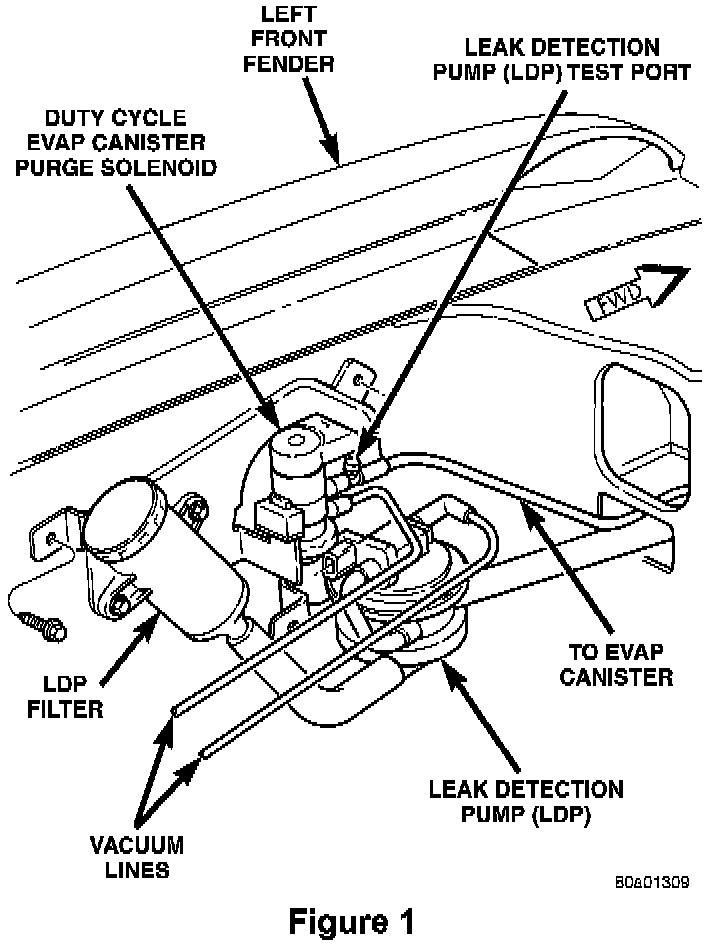

LDP - Erroneous MIL Illumination, DTC's Set
NO: 18-34-96GROUP: Vehicle Performance
DATE: Dec. 13, 1996
SUBJECT:
Erroneous MIL Illumination with DTC's $32, $10, $0C, or $AD
MODELS:
1997 (ZJ) Grand Cherokee (California Emissions)
NOTE:
THIS BULLETIN APPLIES TO VEHICLES EQUIPPED WITH 4.0L ENGINES BUILT BEFORE NOV. 1, 1996 MDH (11-O1-XX) WITH CALIFORNIA EMISSIONS AND A LEAK DETECTION PUMP (LDP).
SYMPTOM/CONDITION:
1. Erroneous MIL illumination with DTCs:
Hex Code Description
$32 TRANSMISSION 3-4 SOLENOID/TRANSMISSION RELAY CIRCUIT
$10 A/C CLUTCH RELAY CIRCUIT
$0C TORQUE CONVERTOR CLUTCH/TRANSMISSION RELAY CIRCUITS
$AD TRANS 12 VOLT SUPPLY RELAY CTRL CIRCUIT
DIAGNOSIS:
Using the Mopar Diagnostic System (MDS) or the Diagnostic Scan Tool (DRB III) with the appropriate Diagnostic Procedures Manual, verify all engine/transmission systems are functioning as designed. If Diagnostic Trouble Codes (DTC's) are present, record them on the repair order and repair as necessary before proceeding further with this bulletin. If only those DTC's listed above are present, perform the Repair Procedure.
PARTS REQUIRED:
1 04897408AA Wiring, Leak Detection Pump Jumper
REPAIR PROCEDURE:
This repair involves installing a jumper harness in line with the leak detection pump.
1. Verify that the ignition switch is in the "OFF" position.

2. Disconnect the 4-way connector from the leak detection pump. The pump is located in the front left corner of the engine compartment, below the evap canister purge solenoid (Figure 1).
3. Install the jumper harness p/n 04897408AA between the leak detection pump and vehicle harness.
4. Tie wrap any excess harness out of the way.
POLICY: Reimbursable within the provisions of the warranty.
TIME ALLOWANCE:
Labor Operation No: 25-01-10-90 0.2 Hrs.
FAILURE CODE: XX - Service Adjustment